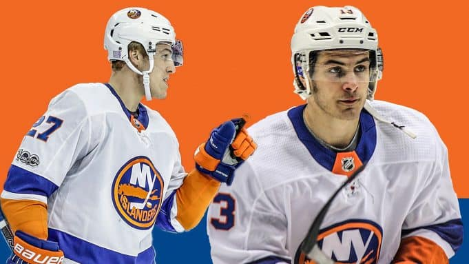

The Islanders went into the night on a nine game win streak, looking for their 10th win in a row against the Ottawa Senators which would tie them for 2nd all time in franchise history. It got off to a rocky start when the Islanders gave up a short handed goal in the first period but they quickly bounced back to tie it up in the same period. The Islanders took control of this game and started to destroy Ottawa. Cole Bardreau the Islanders rookie who got called up this season following the injury of Casey Cizikas scored his first NHL goal to break the tie. It was all the Islanders from there on. The Islanders took control after the penalty shot that Cole Bardreau scored and never gave Ottawa any time to breath.
Cal Clutterbuck and Casey Cizikas both had a goal and an assist in the win with Josh Bailey also getting a goal. Islanders coach Barry Trotz explained this winning streak perfectly when he said If you guys wouldn't bring it up, we wouldn't have a clue, The Islanders take this winning streak game by game and focusing on the game ahead everytime. The Islanders would rather focus on the next game than dwell over the previous game. That is the indentity of this team, they have players stepping up for players with injury and geting contributions from everyone on the team. This winning streak is remarkable considering all the injuries this team as dealt with. They had Casey Cizikas and Matt Martin out for multiple games with Matt Martin still on the IR. Cole Bardreau has stepped in nicely doing all the little things right even though he did not get on the scoreboard throughout his first couple games. The Islanders look to continue this winning streak against the Pittsburgh Penguins where they will look for win 11 in a row.

Islanders Extend Their Point Streak to Franchise Record 16 Games!!!
Alec Radin
The Islanders went into this game on a 15 game point streak which tied the franchise record for longest point streak. They previously won the last game in Pittsburgh with Brock Nelson scoring the game winning goal in overtime. Nelson had 2 goals including the game winner whihc brought the Islanders point streak to 15 games which tied the franchise record for longest point streak at 15 games. The Islanders went into this game as they always did, not focusing on the point streak but focusing on the result of the game. The Pittsburgh Penguins scored first on the night but the Islanders did not get discouraged and fought back to keep the game more competitive.
The Islanders Scott Mayfield came back with a goal towards the end of the first period when Mat Barzal won a faceoff and put it back to Mayfield, Mayfield shot it through traffic and got a lucky deflection off of a Pittsburgh player and went into the net past Matt Murray. The second period began with Pittsburgh's Bryan Rust scoring a goal 1:09 into the period. Rust has absolutely torched the Islanders this season with scoring goals in every game the two teams have played. Anthony Beeauvillier scored for the fourth game in a row to tie the game 11:38 into the second. Nelson scored off a faceoff on the powerplay in the third to give the Islanders a 3-2 lead. The Pittsburgh Penguins would eventually tie the game up with 1 minute to go in the 3rd so these two teams were going bavk to overtime. Brock Nelson got the game winning goal with a swifty backhand move to put it past Murray. This win broke the franchise record for longest point streak but the team does not care about that, they only care about looking foward to the next game.